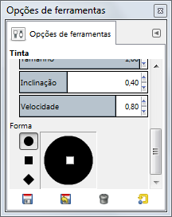

|

|
 |
| 3.9. Aerógrafo |

|
3.11. Pincel |
A ferramenta de tinta simula uma caneta-tinteiro com uma ponta controlável para pintar traços sólidos com bordas suavizadas. O tamanho, o formato e o ângulo da ponta determinam o traço a medida que a ferramenta vai sendo usada para desenhar.
Existem várias formas para ativar a ferramenta:
A partir do menu da janela de imagem: → → .
Ícone da ferramenta de clonagem na caixa de ferramentas
Ao pressionar o atalho de teclado C.
Essa tecla alterna a ponta para um Coletor de cores.
Normally, tool options are displayed in a window attached under the Toolbox as soon as you activate a tool. If they are not, you can access them from the main menu through → → which opens the option window of the selected tool. The available tool options can also be accessed by double clicking the corresponding tool icon in the Toolbox.
Controla o tamanho aparente da caneta-tinteiro com valores que variam de 0 (muito fino) até 200 (muito grosso).
Isso controla o ângulo aparente da ponta da caneta-tinteiro em relação à horizontal.
Isso controla o tamanho da abertura de tinta na ponta da caneta (portanto, “quanta tinta passa”), do minimo ao máximo. Perceba que o tamanho 0 não resulta numa abertura de tamanho zero, mas sim numa abertura de tamanho mínimo.
Controla a aparente inclinação da ponta da caneta-tinteiro em relação à horizontal. Esse controle e o controle de ângulo descrito acima são co-relacionados. Fazer experimentos é a melhor maneira para aprender a usá-las.
Isso controla o tamanho efetivo da ponta em função a velocidade de desenho. Isso é, assim como numa caneta-tinteiro real, quanto mais rápido você desenha, mais fina a linha será.
Existem três pontas de caneta para escolher: círculo, quadrado, e diamante.
A geometria do tipo da ponta pode ser ajustada ao se manter pressionado o botão 1 do mouse no pequeno quadrado do centro do ícone de forma, movendo-o em volta.
